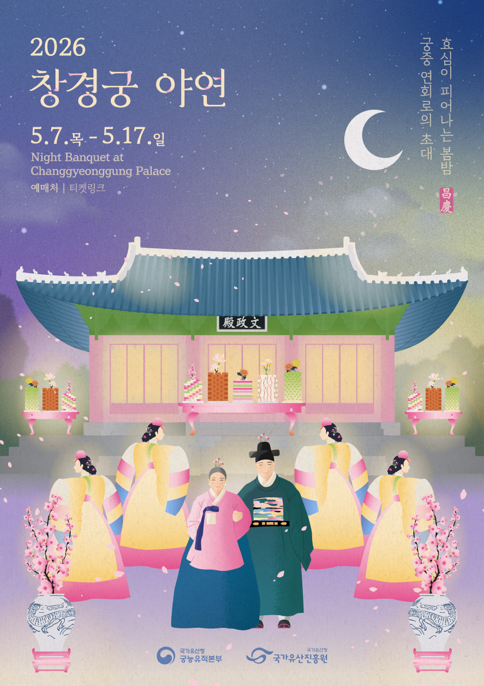
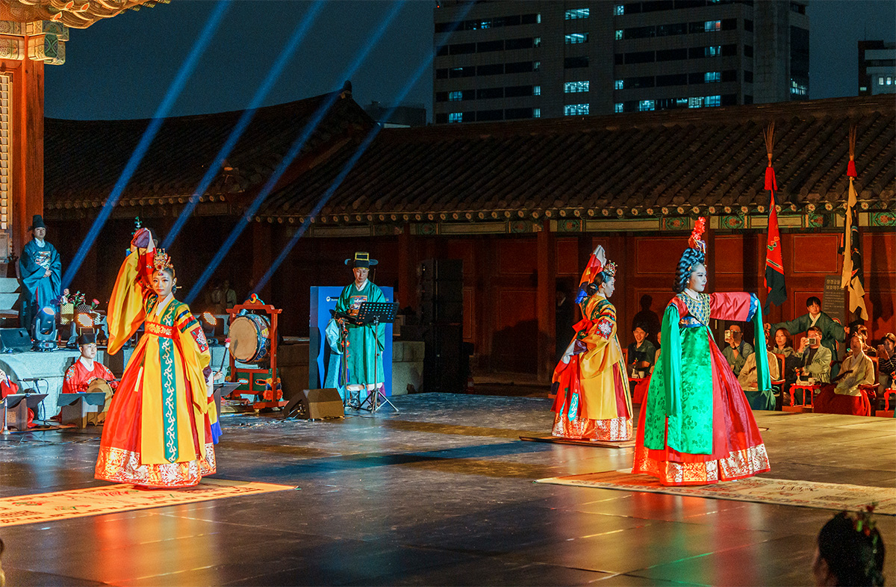
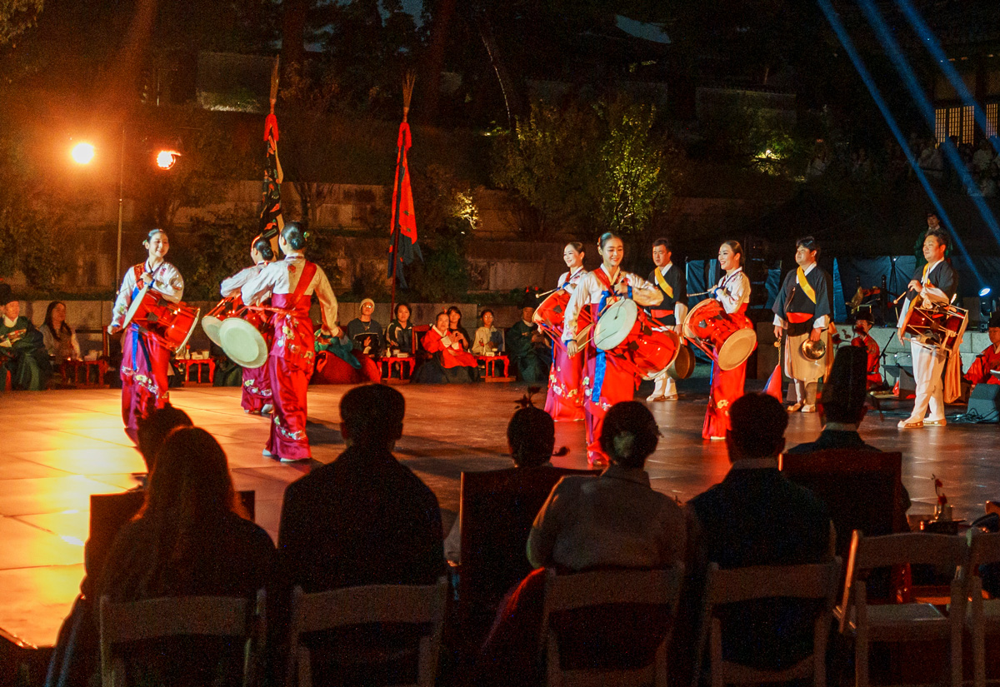
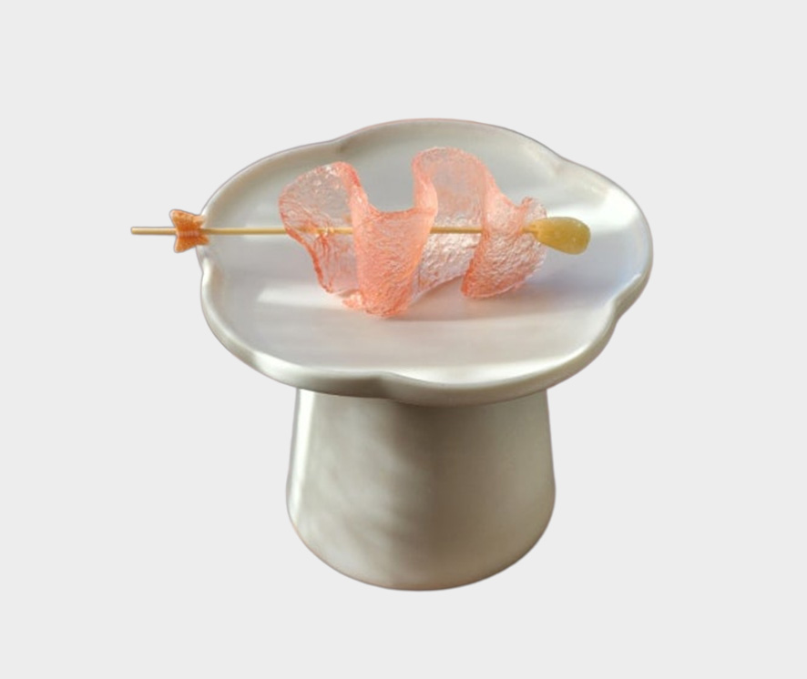

Today's Schedule at a Glance

An Invitation to a Royal Banquet Where Filial Love Blooms
Step into the roles of Joseon court officials and noble ladies, and give your parents a truly unforgettable gift: a night inside a royal palace.
Thu, May 7 - Sun, May 17, 2026
17:00 ~ 20:30
(Main Performance: 7:10 PM - 8:00 PM)
Munjeongjeon Hall & Surrounding Grounds, Changgyeonggung Palace
30 families per day
(1 experience participant + up to 2 accompanying family members)
 Royal Court Official Experience
Royal Court Official Experience
Receive an official court title, dress in authentic court robes, and take your place at the king's banquet as a true member of the Joseon court.
- Father | Traditional court robe (danryeong) and official hat (samo), with full styling
- Mother | Traditional layered ensemble (dangui, skirt, binyeo hairpin, cheobji ornament), with full styling
 Royal Confections Experience
Royal Confections Experience
- Savor an exquisite selection of traditional byeonggwa (Korean confections) once enjoyed by the Joseon royal family on their most celebrated occasions.
- A curated tasting of green tea yaksik, persimmon rolls, candied walnuts, and more.
 Royal Banquet & Performance
Royal Banquet & Performance
- Enjoy royal confections and tea while watching classical court dance and traditional folk dance.
<Bak Jeop Mu>, <Ye Do Mu>, <Seoljanggo Dance> - *A mobile subtitle service is available to help you follow along with court ceremonies and performances that may be unfamiliar.
 Professional Photography & Videography
Professional Photography & Videography
- Longevity Portrait : A solo portrait of your parents in full traditional attire, captured by a professional photographer
- Video Letter : A candid interview-style video in which parents and children share heartfelt messages with one another
- Family Photo :
- A group portrait taken on stage after the performance, with the royal throne and ceremonial table as the backdrop
- Natural family moments captured throughout the Hyojabee filial piety experience
 Filial Piety Experiences
Filial Piety Experiences
- Hyojabee : A playful family event: a Korean spin on the traditional first-birthday ritual (doljabee), this time with the parents as the star of the show
- Filial Letter (Hyosim Pyeonji) : Write a letter to your parents from the heart, to be delivered 6 months or 1 year from today
- Royal Letter Hunt : Search the grounds of Changgyeonggung for hidden letters written by Crown Prince Hyomyeong
Immerse yourself in the refined world of Joseon court dance and discover the depth and elegance of Korea's royal cultural heritage.
Bak Jeop Mu is one of the court dances composed by Crown Prince Hyomyeong in the late Joseon period. It portrays pairs of colorful butterflies drifting on the spring breeze, brushing lightly against blossoms in the warm sunlight. Six dancers perform in flowing green costumes (noknrapo) adorned with embroidered butterflies, moving with grace and fluid beauty.
5 minutes
6 performers, Korea Heritage Agency Performing Arts Ensemble

This performance brings together Musanhyang and Chunaengjeon, two dances composed by Crown Prince Hyomyeong of the Joseon Dynasty, one as a tribute to his father King Sunjo, and the other as an offering to his mother Queen Sunwon Sukwang.
5 minutes
3 performers, Korea Heritage Agency Performing Arts Ensemble
Sub-programs
Musanhyang
A dancer dressed in deep green stands atop a lacquered tray and performs with bold, sweeping movements, conveying a sense of dignity, grandeur, and powerful presence.
Chunaengjeon
A dancer dressed in soft yellow stands on a flower-patterned mat and performs with gentle, refined movements, capturing the delicate poise of an oriole in spring.

The janggo drum is worn diagonally across the shoulder and secured at the waist, allowing the performer to play intricate rhythms while dancing simultaneously. Known as Seoljanggo or Seoljanggo Nori, this performance balances vibrant percussion with expressive movement.
6 minutes
6 performers, Korea Heritage Agency Performing Arts Ensemble
Savor a curated selection of traditional Korean confections (byeonggwa) once enjoyed in the royal courts of the Joseon Dynasty.

Jeon-yak (Royal Herbal Jelly)
Among the many prized delicacies of the Joseon royal household, jeon-yak was considered one of the most distinguished. This richly spiced herbal jelly was prepared with care and offered on special royal occasions.
Honey, gelatin (beef trotters, water), jujube, dried ginger powder, cinnamon powder, bellflower root, black pepper, cloves, sesame oil

Dasik (Pressed Tea Confection)
A traditional Korean confection made by kneading finely ground starch, pine pollen, or black sesame powder with honey or jocheong (malt syrup) and pressing the mixture into decorative molds. The molds are carved with auspicious symbols, making dasik as meaningful as it is delicious.
Soybean, pumpkin seeds, honey

Walnut Jeonggwa (Candied Walnuts)
Walnuts are blanched three times in hot water, then slowly simmered in sugar and corn syrup before being lightly fried to a golden finish. Rich in unsaturated fatty acids, walnuts are celebrated for supporting brain health and skin vitality.
Walnuts, sugar, corn syrup, cooking oil

Bellflower Root Jeonggwa (Candied Bellflower)
Bellflower root (doraji) is blanched, then simmered with corn syrup or honey to create a subtly bittersweet confection with a distinctive aroma. Rich in saponin, doraji has long been used in Korean traditional medicine to support respiratory health.
Bellflower root, corn syrup, salt, soybean powder

Gotgam Danji (Stuffed Persimmon Roll)
Records show that persimmons have been cultivated in Korea since the Goryeo Dynasty, and they remained a royal favorite throughout the Joseon period. Gotgam Danji is made by stuffing dried persimmons with citron preserve, candied walnuts, and cinnamon.
Dried persimmon, citron preserve, walnut, cinnamon powder, jujube

Green Tea Yaksik
Yaksik, also known as yakbap, is a beloved Korean sweet rice dish that has graced festive tables for centuries. Glutinous rice is soaked overnight in a savory-sweet soy and sugar brine, then steamed with chestnuts and jujubes, folded in sesame oil, and finished with pine nuts.
Glutinous rice, salt, chestnuts, jujube, pine nuts, sugar, cinnamon powder, green tea powder, honey, sesame oil

Lotus Root Danggwa
A winter-season delicacy with a story rooted in history. Lotus root is prized in traditional Korean medicine for its ability to stop bleeding, reduce inflammation, dissolve blood clots, and ease respiratory ailments. Here, it is thinly sliced, briefly blanched, soaked in salted water, dried, and fried to a satisfying crisp.
Lotus root, cooking oil, sugar, salt

Gokcha (Roasted Grain Tea)
A traditional Korean grain tea, warm, earthy, and deeply comforting. Barley, dried corn, and black soybeans are each dry-roasted separately, then simmered together in water and strained.
Barley, corn, black soybean, Solomon's seal
Green Tea Yaksik
Yaksik, also known as yakbap, is a beloved Korean sweet rice dish that has graced festive tables for centuries. Glutinous rice is soaked overnight in a savory-sweet soy and sugar brine, then steamed with chestnuts and jujubes, folded in sesame oil, and finished with pine nuts.
Glutinous rice, salt, chestnuts, jujube, pine nuts, sugar, cinnamon powder, green tea powder, honey, sesame oil
Lotus Root Danggwa
A winter-season delicacy with a story rooted in history. Lotus root is prized in traditional Korean medicine for its ability to stop bleeding, reduce inflammation, dissolve blood clots, and ease respiratory ailments. Here, it is thinly sliced, briefly blanched, soaked in salted water, dried, and fried to a satisfying crisp.
Lotus root, cooking oil, sugar, salt

Pear Jeonggwa
Juicy Korean pear, packed with natural moisture and dietary fiber, is slowly simmered in honey or a light sugar syrup to create a gentle, floral preserve.
Pear, sugar, pine nuts

Gaeseong Juak
A prized delicacy of Joseon royal banquets, juak was once reserved for distinguished guests and grand occasions. Glutinous rice flour and wheat flour are kneaded with makgeolli, shaped, and fried until golden.
Glutinous rice flour, wheat flour, makgeolli, sugar, corn syrup, ginger, cooking oil
A Note on the Refreshments
Discover the perfect backdrops for capturing beautiful memories amid the timeless beauty of Changgyeonggung.


Highlights
5:30 PM - 6:20 PM (when the sunset light falls softly across the courtyard)


Highlights
3:00 PM - 5:00 PM (when the light softens to a warm, gentle glow)
Hanbok Photography Tips
Working with Light
Composition & Angle
Follow along with every moment of the performance with our real-time subtitle service, designed to deepen your experience and bring the story to life.
Live Subtitle Service
Real-time subtitles are available throughout the performance.
🎭 View Live Subtitles